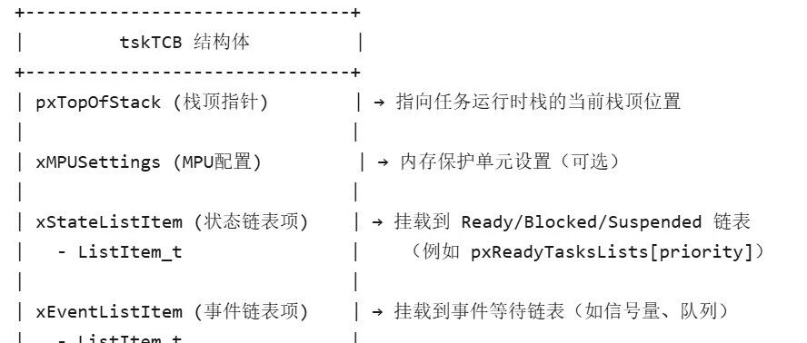

freertos核心代码之task模块（上）
task函数源码含有如下几部分内容：
优先级处理
创建任务
启动第1个任务
任务切换
任务阻塞/唤醒
{if( ( uxPriority ) > uxTopReadyPriority ){ \uxTopReadyPriority = ( uxPriority ); \找到最高优先级的任务} \} /* taskRECORD_READY_PRIORITY */
还有
{ \UBaseType_t uxTopPriority = uxTopReadyPriority; \\/* Find the highest priority queue that contains ready tasks. */ \while( listLIST_IS_EMPTY( &( pxReadyTasksLists[ uxTopPriority ] ) ) ) \{ \configASSERT( uxTopPriority ); //最高优先级等于0出错 \--uxTopPriority; \} \\/* listGET_OWNER_OF_NEXT_ENTRY indexes through the list, so the tasks of \* the same priority get an equal share of the processor time. */ \listGET_OWNER_OF_NEXT_ENTRY( pxCurrentTCB, &( pxReadyTasksLists[ uxTopPriority ] ) ); \uxTopReadyPriority = uxTopPriority; \} /* taskSELECT_HIGHEST_PRIORITY_TASK */
核心要点
listGET_OWNER_OF_NEXT_ENTRY( pxCurrentTCB, &( pxReadyTasksLists[ uxTopPriority ] ) );从当前最高优先级的就绪队列中取出下一个任务，并更新 pxCurrentTCB（当前任务控制块）。uxTopReadyPriority = uxTopPriority;更新全局变量 uxTopReadyPriority，记录当前运行的优先级。
下面这个宏会在最高优先级的任务为空时修改总优先级
{ \if( listCURRENT_LIST_LENGTH( &( pxReadyTasksLists[ ( uxPriority ) ] ) ) == ( UBaseType_t ) 0 ){portRESET_READY_PRIORITY( ( uxPriority ), ( uxTopReadyPriority ) )}}
listCURRENT_LIST_LENGTH(...) == 0检查指定优先级 uxPriority的就绪任务列表是否为空。portRESET_READY_PRIORITY(...)
硬件优化如果列表为空，调用硬件加速方法更新 uxTopReadyPriority（例如清除优先级位图中的对应位）。确保调度器下次运行时能正确找到新的最高优先级。
traceMOVED_TASK_TO_READY_STATE( pxTCB ); \taskRECORD_READY_PRIORITY( ( pxTCB )->uxPriority ); \vListInsertEnd( &( pxReadyTasksLists[ ( pxTCB )->uxPriority ] ), &( ( pxTCB )->xStateListItem ) ); \tracePOST_MOVED_TASK_TO_READY_STATE( pxTCB )
逐句解释：
traceMOVED_TASK_TO_READY_STATE( pxTCB );调用调试钩子函数，记录任务状态变为就绪（可选功能，需启用 configUSE_TRACE_FACILITY）。taskRECORD_READY_PRIORITY( ( pxTCB )->uxPriority );调用宏 taskRECORD_READY_PRIORITY，更新全局变量uxTopReadyPriority。（优先级更高）vListInsertEnd( &( pxReadyTasksLists[ ( pxTCB )->uxPriority ] ), &( ( pxTCB )->xStateListItem ) );pxReadyTasksLists[priority]：优先级为 priority的就绪任务链表。pxTCB->xStateListItem：任务控制块（TCB）中嵌入的链表节点。 - 核心操作
：将任务的列表项 xStateListItem插入对应优先级就绪列表的末尾。 - 参数
pxReadyTasksLists[priority]：优先级为 priority 的就绪任务链表。2.创建任务
typedef struct tskTaskControlBlock /* The old naming convention is used to prevent breaking kernel aware debuggers. */{volatile StackType_t * pxTopOfStack; /*< Points to the location of the last item placed on the tasks stack. THIS MUST BE THE FIRST MEMBER OF THE TCB STRUCT. */xMPU_SETTINGS xMPUSettings; /*< The MPU settings are defined as part of the port layer. THIS MUST BE THE SECOND MEMBER OF THE TCB STRUCT. */ListItem_t xStateListItem; /*< The list that the state list item of a task is reference from denotes the state of that task (Ready, Blocked, Suspended ). */ListItem_t xEventListItem; /*< Used to reference a task from an event list. */UBaseType_t uxPriority; /*< The priority of the task. 0 is the lowest priority. */StackType_t * pxStack; /*< Points to the start of the stack. */char pcTaskName[ configMAX_TASK_NAME_LEN ]; /*< Descriptive name given to the task when created. Facilitates debugging only. */ /*lint !e971 Unqualified char types are allowed for strings and single characters only. */StackType_t * pxEndOfStack; /*< Points to the highest valid address for the stack. */UBaseType_t uxCriticalNesting; /*< Holds the critical section nesting depth for ports that do not maintain their own count in the port layer. */UBaseType_t uxTCBNumber; /*< Stores a number that increments each time a TCB is created. It allows debuggers to determine when a task has been deleted and then recreated. */UBaseType_t uxTaskNumber; /*< Stores a number specifically for use by third party trace code. */UBaseType_t uxBasePriority; /*< The priority last assigned to the task - used by the priority inheritance mechanism. */UBaseType_t uxMutexesHeld;TaskHookFunction_t pxTaskTag;void * pvThreadLocalStoragePointers[ configNUM_THREAD_LOCAL_STORAGE_POINTERS ];uint32_t ulRunTimeCounter; /*< Stores the amount of time the task has spent in the Running state. *//* Allocate a Newlib reent structure that is specific to this task.* Note Newlib support has been included by popular demand, but is not* used by the FreeRTOS maintainers themselves. FreeRTOS is not* responsible for resulting newlib operation. User must be familiar with* newlib and must provide system-wide implementations of the necessary* stubs. Be warned that (at the time of writing) the current newlib design* implements a system-wide malloc() that must be provided with locks.** See the third party link http://www.nadler.com/embedded/newlibAndFreeRTOS.html* for additional information. */struct _reent xNewLib_reent;volatile uint32_t ulNotifiedValue[ configTASK_NOTIFICATION_ARRAY_ENTRIES ];volatile uint8_t ucNotifyState[ configTASK_NOTIFICATION_ARRAY_ENTRIES ];/* See the comments in FreeRTOS.h with the definition of* tskSTATIC_AND_DYNAMIC_ALLOCATION_POSSIBLE. */uint8_t ucStaticallyAllocated; /*< Set to pdTRUE if the task is a statically allocated to ensure no attempt is made to free the memory. */uint8_t ucDelayAborted;int iTaskErrno;} tskTCB;
总体规划：

最重要的其实只有几条：
（a）.
pxTopOfStack | StackType_t* | 栈顶指针 |
xStateListItem | ListItem_t | 状态链表项Ready/Blocked/Suspended 等状态链表（如 pxReadyTasksLists）。 |
xEventListItem | ListItem_t | 事件链表项 |
BaseType_t xTaskCreate( TaskFunction_t pxTaskCode,const char * const pcName, /*lint !e971 Unqualified char types are allowed for strings and single characters only. */const configSTACK_DEPTH_TYPE usStackDepth,void * const pvParameters,UBaseType_t uxPriority,TaskHandle_t * const pxCreatedTask ){TCB_t * pxNewTCB;BaseType_t xReturn;/* If the stack grows down then allocate the stack then the TCB so the stack* does not grow into the TCB. Likewise if the stack grows up then allocate* the TCB then the stack. */{/* Allocate space for the TCB. Where the memory comes from depends on* the implementation of the port malloc function and whether or not static* allocation is being used. */pxNewTCB = ( TCB_t * ) pvPortMalloc( sizeof( TCB_t ) );if( pxNewTCB != NULL ){/* Allocate space for the stack used by the task being created.* The base of the stack memory stored in the TCB so the task can* be deleted later if required. */pxNewTCB->pxStack = ( StackType_t * ) pvPortMalloc( ( ( ( size_t ) usStackDepth ) * sizeof( StackType_t ) ) ); /*lint !e961 MISRA exception as the casts are only redundant for some ports. */if( pxNewTCB->pxStack == NULL ){/* Could not allocate the stack. Delete the allocated TCB. */vPortFree( pxNewTCB );pxNewTCB = NULL;}}}{StackType_t * pxStack;/* Allocate space for the stack used by the task being created. */pxStack = pvPortMalloc( ( ( ( size_t ) usStackDepth ) * sizeof( StackType_t ) ) ); /*lint !e9079 All values returned by pvPortMalloc() have at least the alignment required by the MCU's stack and this allocation is the stack. */if( pxStack != NULL ){/* Allocate space for the TCB. */pxNewTCB = ( TCB_t * ) pvPortMalloc( sizeof( TCB_t ) ); /*lint !e9087 !e9079 All values returned by pvPortMalloc() have at least the alignment required by the MCU's stack, and the first member of TCB_t is always a pointer to the task's stack. */if( pxNewTCB != NULL ){/* Store the stack location in the TCB. */pxNewTCB->pxStack = pxStack;}else{/* The stack cannot be used as the TCB was not created. Free* it again. */vPortFree( pxStack );}}else{pxNewTCB = NULL;}}if( pxNewTCB != NULL ){{/* Tasks can be created statically or dynamically, so note this* task was created dynamically in case it is later deleted. */pxNewTCB->ucStaticallyAllocated = tskDYNAMICALLY_ALLOCATED_STACK_AND_TCB;}prvInitialiseNewTask( pxTaskCode, pcName, ( uint32_t ) usStackDepth, pvParameters, uxPriority, pxCreatedTask, pxNewTCB, NULL );prvAddNewTaskToReadyList( pxNewTCB );xReturn = pdPASS;}else{xReturn = errCOULD_NOT_ALLOCATE_REQUIRED_MEMORY;}return xReturn;}
这个函数就是任务创建函数：
解释一些重点：
StackType_t *pxStack = pvPortMalloc(usStackDepth * sizeof(StackType_t));// 先分配栈if (pxStack != NULL) { pxNewTCB = pvPortMalloc(sizeof(TCB_t));// 再分配TCBif (pxNewTCB != NULL) { pxNewTCB->pxStack = pxStack; // 关联栈到TCB }else{vPortFree(pxStack);// TCB分配失败，释放栈} }
if(tskSTATIC_AND_DYNAMIC_ALLOCATION_POSSIBLE != 0)pxNewTCB->ucStaticallyAllocated = tskDYNAMICALLY_ALLOCATED_STACK_AND_TCB;endif
// 动态任务创建TaskHandle_t xDynamicTaskHandle; xTaskCreate(vTaskFunction,"Dynamic", 128, NULL, 1, &xDynamicTaskHandle);// 静态任务创建static StaticTask_t xTaskTCB;// 用户静态分配TCBstatic StackType_t xTaskStack[128];// 用户静态分配栈TaskHandle_t xStaticTaskHandle = xTaskCreateStatic(vTaskFunction,"Static", 128, NULL, 1,xTaskStack, &xTaskTCB );
prvInitialiseNewTask( pxTaskCode, pcName, (uint32_t)usStackDepth,pvParameters, uxPriority, pxCreatedTask, pxNewTCB, NULL);prvInitialiseNewTask 是 FreeRTOS 内部用于 初始化新任务控制块（TCB）和任务栈 的核心函数，它负责将“裸”内存转换为一个可被调度器管理的任务。其意义可类比为操作系统的“任务孵化器”，具体功能包括：
加入就绪列表
pxReadyTasksLists[uxPriority]），若新任务优先级高于当前任务，触发任务切换（若已启动调度器）。static void prvInitialiseNewTask( TaskFunction_t pxTaskCode,const char * const pcName, /*lint !e971 Unqualified char types are allowed for strings and single characters only. */const uint32_t ulStackDepth,void * const pvParameters,UBaseType_t uxPriority,TaskHandle_t * const pxCreatedTask,TCB_t * pxNewTCB,const MemoryRegion_t * const xRegions ){StackType_t * pxTopOfStack;UBaseType_t x;/* Should the task be created in privileged mode? */BaseType_t xRunPrivileged;if( ( uxPriority & portPRIVILEGE_BIT ) != 0U ){xRunPrivileged = pdTRUE;}else{xRunPrivileged = pdFALSE;}uxPriority &= ~portPRIVILEGE_BIT;/* Avoid dependency on memset() if it is not required. */{/* Fill the stack with a known value to assist debugging. */( void ) memset( pxNewTCB->pxStack, ( int ) tskSTACK_FILL_BYTE, ( size_t ) ulStackDepth * sizeof( StackType_t ) );}/* Calculate the top of stack address. This depends on whether the stack* grows from high memory to low (as per the 80x86) or vice versa.* portSTACK_GROWTH is used to make the result positive or negative as required* by the port. */{pxTopOfStack = &( pxNewTCB->pxStack[ ulStackDepth - ( uint32_t ) 1 ] );pxTopOfStack = ( StackType_t * ) ( ( ( portPOINTER_SIZE_TYPE ) pxTopOfStack ) & ( ~( ( portPOINTER_SIZE_TYPE ) portBYTE_ALIGNMENT_MASK ) ) ); /*lint !e923 !e9033 !e9078 MISRA exception. Avoiding casts between pointers and integers is not practical. Size differences accounted for using portPOINTER_SIZE_TYPE type. Checked by assert(). *//* Check the alignment of the calculated top of stack is correct. */configASSERT( ( ( ( portPOINTER_SIZE_TYPE ) pxTopOfStack & ( portPOINTER_SIZE_TYPE ) portBYTE_ALIGNMENT_MASK ) == 0UL ) );{/* Also record the stack's high address, which may assist* debugging. */pxNewTCB->pxEndOfStack = pxTopOfStack;}}{pxTopOfStack = pxNewTCB->pxStack;/* Check the alignment of the stack buffer is correct. */configASSERT( ( ( ( portPOINTER_SIZE_TYPE ) pxNewTCB->pxStack & ( portPOINTER_SIZE_TYPE ) portBYTE_ALIGNMENT_MASK ) == 0UL ) );/* The other extreme of the stack space is required if stack checking is* performed. */pxNewTCB->pxEndOfStack = pxNewTCB->pxStack + ( ulStackDepth - ( uint32_t ) 1 );}/* Store the task name in the TCB. */if( pcName != NULL ){for( x = ( UBaseType_t ) 0; x < ( UBaseType_t ) configMAX_TASK_NAME_LEN; x++ ){pxNewTCB->pcTaskName[ x ] = pcName[ x ];/* Don't copy all configMAX_TASK_NAME_LEN if the string is shorter than* configMAX_TASK_NAME_LEN characters just in case the memory after the* string is not accessible (extremely unlikely). */if( pcName[ x ] == ( char ) 0x00 ){break;}else{mtCOVERAGE_TEST_MARKER();}}/* Ensure the name string is terminated in the case that the string length* was greater or equal to configMAX_TASK_NAME_LEN. */pxNewTCB->pcTaskName[ configMAX_TASK_NAME_LEN - 1 ] = '\0';}else{/* The task has not been given a name, so just ensure there is a NULL* terminator when it is read out. */pxNewTCB->pcTaskName[ 0 ] = 0x00;}/* This is used as an array index so must ensure it's not too large. First* remove the privilege bit if one is present. */if( uxPriority >= ( UBaseType_t ) configMAX_PRIORITIES ){uxPriority = ( UBaseType_t ) configMAX_PRIORITIES - ( UBaseType_t ) 1U;}else{mtCOVERAGE_TEST_MARKER();}pxNewTCB->uxPriority = uxPriority;{pxNewTCB->uxBasePriority = uxPriority;pxNewTCB->uxMutexesHeld = 0;}vListInitialiseItem( &( pxNewTCB->xStateListItem ) );vListInitialiseItem( &( pxNewTCB->xEventListItem ) );/* Set the pxNewTCB as a link back from the ListItem_t. This is so we can get* back to the containing TCB from a generic item in a list. */listSET_LIST_ITEM_OWNER( &( pxNewTCB->xStateListItem ), pxNewTCB );/* Event lists are always in priority order. */listSET_LIST_ITEM_VALUE( &( pxNewTCB->xEventListItem ), ( TickType_t ) configMAX_PRIORITIES - ( TickType_t ) uxPriority ); /*lint !e961 MISRA exception as the casts are only redundant for some ports. */listSET_LIST_ITEM_OWNER( &( pxNewTCB->xEventListItem ), pxNewTCB );{pxNewTCB->uxCriticalNesting = ( UBaseType_t ) 0U;}{pxNewTCB->pxTaskTag = NULL;}{pxNewTCB->ulRunTimeCounter = 0UL;}{vPortStoreTaskMPUSettings( &( pxNewTCB->xMPUSettings ), xRegions, pxNewTCB->pxStack, ulStackDepth );}{/* Avoid compiler warning about unreferenced parameter. */( void ) xRegions;}{memset( ( void * ) &( pxNewTCB->pvThreadLocalStoragePointers[ 0 ] ), 0x00, sizeof( pxNewTCB->pvThreadLocalStoragePointers ) );}{memset( ( void * ) &( pxNewTCB->ulNotifiedValue[ 0 ] ), 0x00, sizeof( pxNewTCB->ulNotifiedValue ) );memset( ( void * ) &( pxNewTCB->ucNotifyState[ 0 ] ), 0x00, sizeof( pxNewTCB->ucNotifyState ) );}{/* Initialise this task's Newlib reent structure.* See the third party link http://www.nadler.com/embedded/newlibAndFreeRTOS.html* for additional information. */_REENT_INIT_PTR( ( &( pxNewTCB->xNewLib_reent ) ) );}{pxNewTCB->ucDelayAborted = pdFALSE;}/* Initialize the TCB stack to look as if the task was already running,* but had been interrupted by the scheduler. The return address is set* to the start of the task function. Once the stack has been initialised* the top of stack variable is updated. */{/* If the port has capability to detect stack overflow,* pass the stack end address to the stack initialization* function as well. */{{pxNewTCB->pxTopOfStack = pxPortInitialiseStack( pxTopOfStack, pxNewTCB->pxStack, pxTaskCode, pvParameters, xRunPrivileged );}{pxNewTCB->pxTopOfStack = pxPortInitialiseStack( pxTopOfStack, pxNewTCB->pxEndOfStack, pxTaskCode, pvParameters, xRunPrivileged );}}{pxNewTCB->pxTopOfStack = pxPortInitialiseStack( pxTopOfStack, pxTaskCode, pvParameters, xRunPrivileged );}}{/* If the port has capability to detect stack overflow,* pass the stack end address to the stack initialization* function as well. */{{pxNewTCB->pxTopOfStack = pxPortInitialiseStack( pxTopOfStack, pxNewTCB->pxStack, pxTaskCode, pvParameters );}{pxNewTCB->pxTopOfStack = pxPortInitialiseStack( pxTopOfStack, pxNewTCB->pxEndOfStack, pxTaskCode, pvParameters );}}{pxNewTCB->pxTopOfStack = pxPortInitialiseStack( pxTopOfStack, pxTaskCode, pvParameters );}}if( pxCreatedTask != NULL ){/* Pass the handle out in an anonymous way. The handle can be used to* change the created task's priority, delete the created task, etc.*/*pxCreatedTask = ( TaskHandle_t ) pxNewTCB;}else{mtCOVERAGE_TEST_MARKER();}}
pxEndOfStack记录栈的最高地址，用于调试或溢出检测。
pxNewTCB->pxTopOfStack = pxPortInitialiseStack(pxTopOfStack, pxTaskCode, pvParameters, xRunPrivileged);pxNewTCB->pxTopOfStack = pxPortInitialiseStack(pxTopOfStack, pxTaskCode, pvParameters);
- 核心作用
由硬件相关函数 pxPortInitialiseStack伪造中断栈帧，使任务首次运行时：PC 指向 pxTaskCode（任务入口）。R0 携带 pvParameters（任务参数）。LR 指向任务退出函数（如 vTaskExit）。这部分代码调用port.c中的pxPortInitialiseStack来伪造现场（栈）
（1）状态链表项（xStateListItem）
vListInitialiseItem(&(pxNewTCB->xStateListItem));// 初始化链表项listSET_LIST_ITEM_OWNER(&(pxNewTCB->xStateListItem), pxNewTCB);// 设置所有者
作用
xStateListItem）初始化为空节点。listSET_LIST_ITEM_OWNER 将链表项的所有者指向当前任务的 TCB，便于从链表项反向获取任务句柄。pxReadyTasksLists[priority]）。（2）事件链表项（xEventListItem）
初始化事件链表项，并设置其值为 configMAX_PRIORITIES - uxPriority。绑定链表项所有者到 TCB。（FreeRTOS 事件链表按升序排列，此操作确保高优先级任务在事件链表中靠前。） - 用途
用于将任务挂载到 事件等待列表（如信号量、队列的等待列表）。
static void prvAddNewTaskToReadyList( TCB_t * pxNewTCB ){/* Ensure interrupts don't access the task lists while the lists are being* updated. */taskENTER_CRITICAL();{uxCurrentNumberOfTasks++;if( pxCurrentTCB == NULL ){/* There are no other tasks, or all the other tasks are in* the suspended state - make this the current task. */pxCurrentTCB = pxNewTCB;if( uxCurrentNumberOfTasks == ( UBaseType_t ) 1 ){/* This is the first task to be created so do the preliminary* initialisation required. We will not recover if this call* fails, but we will report the failure. */prvInitialiseTaskLists();}else{mtCOVERAGE_TEST_MARKER();}}else{/* If the scheduler is not already running, make this task the* current task if it is the highest priority task to be created* so far. */if( xSchedulerRunning == pdFALSE ){if( pxCurrentTCB->uxPriority <= pxNewTCB->uxPriority ){pxCurrentTCB = pxNewTCB;}else{mtCOVERAGE_TEST_MARKER();}}else{mtCOVERAGE_TEST_MARKER();}}uxTaskNumber++;{/* Add a counter into the TCB for tracing only. */pxNewTCB->uxTCBNumber = uxTaskNumber;}traceTASK_CREATE( pxNewTCB );prvAddTaskToReadyList( pxNewTCB );portSETUP_TCB( pxNewTCB );}taskEXIT_CRITICAL();if( xSchedulerRunning != pdFALSE ){/* If the created task is of a higher priority than the current task* then it should run now. */if( pxCurrentTCB->uxPriority < pxNewTCB->uxPriority ){taskYIELD_IF_USING_PREEMPTION();}else{mtCOVERAGE_TEST_MARKER();}}else{mtCOVERAGE_TEST_MARKER();}}
这个函数告诉我们若一个任务可以执行了（ready）会怎么样：
taskENTER_CRITICAL();任何调度行为都要进入临界区（禁用中断）
if( pxCurrentTCB == NULL){pxCurrentTCB = pxNewTCB; // 将新任务设为当前运行任务if( uxCurrentNumberOfTasks == 1){prvInitialiseTaskLists(); // 初始化任务列表（如就绪列表、延迟列表）}}
调度器未运行时的优先级处理
xSchedulerRunning == pdFALSE）。新任务优先级 不低于 当前任务，则立即切换当前任务到新任务。若调度器已启动（ xSchedulerRunning == pdTRUE）且新任务优先级 高于 当前任务。调用taskYIELD()，触发 PendSV 异常，强制调度器重新选择最高优先级任务运行。
prvAddTaskToReadyList( pxNewTCB );讲了任务启动，顺便讲一讲任务删除
void vTaskDelete( TaskHandle_t xTaskToDelete ){TCB_t * pxTCB;taskENTER_CRITICAL();{/* If null is passed in here then it is the calling task that is* being deleted. */pxTCB = prvGetTCBFromHandle( xTaskToDelete );/* Remove task from the ready/delayed list. */if( uxListRemove( &( pxTCB->xStateListItem ) ) == ( UBaseType_t ) 0 ){taskRESET_READY_PRIORITY( pxTCB->uxPriority );}else{mtCOVERAGE_TEST_MARKER();}/* Is the task waiting on an event also? */if( listLIST_ITEM_CONTAINER( &( pxTCB->xEventListItem ) ) != NULL ){( void ) uxListRemove( &( pxTCB->xEventListItem ) );}else{mtCOVERAGE_TEST_MARKER();}/* Increment the uxTaskNumber also so kernel aware debuggers can* detect that the task lists need re-generating. This is done before* portPRE_TASK_DELETE_HOOK() as in the Windows port that macro will* not return. */uxTaskNumber++;if( pxTCB == pxCurrentTCB ){/* A task is deleting itself. This cannot complete within the* task itself, as a context switch to another task is required.* Place the task in the termination list. The idle task will* check the termination list and free up any memory allocated by* the scheduler for the TCB and stack of the deleted task. */vListInsertEnd( &xTasksWaitingTermination, &( pxTCB->xStateListItem ) );/* Increment the ucTasksDeleted variable so the idle task knows* there is a task that has been deleted and that it should therefore* check the xTasksWaitingTermination list. */++uxDeletedTasksWaitingCleanUp;/* Call the delete hook before portPRE_TASK_DELETE_HOOK() as* portPRE_TASK_DELETE_HOOK() does not return in the Win32 port. */traceTASK_DELETE( pxTCB );/* The pre-delete hook is primarily for the Windows simulator,* in which Windows specific clean up operations are performed,* after which it is not possible to yield away from this task -* hence xYieldPending is used to latch that a context switch is* required. */portPRE_TASK_DELETE_HOOK( pxTCB, &xYieldPending );}else{--uxCurrentNumberOfTasks;traceTASK_DELETE( pxTCB );prvDeleteTCB( pxTCB );/* Reset the next expected unblock time in case it referred to* the task that has just been deleted. */prvResetNextTaskUnblockTime();}}taskEXIT_CRITICAL();/* Force a reschedule if it is the currently running task that has just* been deleted. */if( xSchedulerRunning != pdFALSE ){if( pxTCB == pxCurrentTCB ){configASSERT( uxSchedulerSuspended == 0 );portYIELD_WITHIN_API();}else{mtCOVERAGE_TEST_MARKER();}}}
这一段代码看似很长，实际上是围绕一个钩子函数叫
traceTASK_DELETE(pxTCB);
当然，我们要把这个任务挂载到终止链表让它回收资源
vListInsertEnd(&xTasksWaitingTermination, &(pxTCB->xStateListItem));
在此之前，我们还需要将task从事件列表和等待列表中移除
uxListRemove将任务的 xStateListItem从其当前链表（就绪列表或阻塞列表）中移除。返回值表示原链表剩余任务数。若为 0，说明该优先级的就绪列表已空。 taskRESET_READY_PRIORITY若任务所在优先级的就绪列表为空，清除优先级位图中的对应位，优化调度器查找效率。
从事件等待列表中移除任务
xSemaphore->xTasksWaitingToReceive），则移除它。总结一下，第一个任务的创建与启动和后续任务没有本质不同：
先调用 xTaskCreate() 或 xTaskCreateStatic() 创建任务
- 先初始化任务控制块 (TCB），在
prvInitialiseNewTask()中设置栈、优先级、任务名等。 - 再将任务加入就绪列表
用 prvAddNewTaskToReadyList()，该函数会：通过 prvAddTaskToReadyList()将任务插入对应优先级的就绪列表。如果新任务的优先级高于当前任务且调度器已启动，标记需要调度（ taskYIELD_IF_USING_PREEMPTION()）。关键代码：
// 如果是第一个任务且调度器未启动，初始化全局变量if( pxCurrentTCB == NULL){pxCurrentTCB = pxNewTCB;// 设置为当前运行任务prvInitialiseTaskLists();// 初始化任务链表（行号：约 `1400-1500`）}// 如果调度器已启动且新任务优先级更高，触发调度if( xSchedulerRunning == pdTRUE ){if( pxNewTCB->uxPriority > pxCurrentTCB->uxPriority ){taskYIELD_IF_USING_PREEMPTION();}}
但还是有一些不同：

总结一下，这篇文章主要写了一些task.c优先级处理机制，以及任务的设定和处理：
优先级处理机制
采用位图+优先级链表的高效调度设计 通过uxTopReadyPriority快速定位最高优先级任务 任务创建与启动流程 TCB与任务栈的动态/静态分配策略 栈帧初始化的设计（模拟中断上下文） 第一个任务的特殊启动路径（通过SVC异常） 任务的插入链表和删除处理